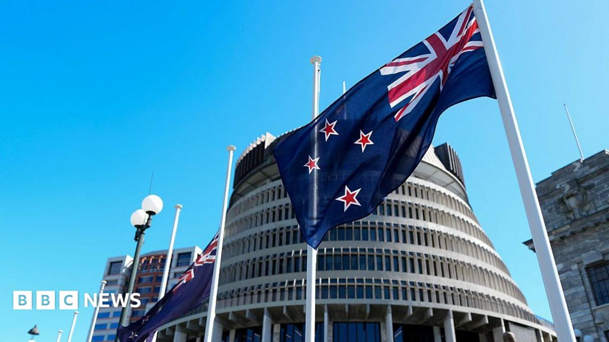

World · 27 Nov 2026
New Zealand's ruling coalition falls short of parliamentary majority by one seat

The right-leaning ruling bloc led by the National Party has fallen short of the majority needed to govern.
Multiple independent publishers are reporting on the same development: New Zealand's ruling coalition falls short of parliamentary majority by one seat.
The available reports place the development in the World category. The accounts were compared for agreement on the central event rather than simply shared names or broad topics.
One of the available reports describes the development this way: The right-leaning ruling bloc led by the National Party has fallen short of the majority needed to govern.
Readers should consult the linked source reports for additional context, updates and details that may change as the story develops.
Sources
This article was produced by the C. O. Eric AI Newsroom from the cited sources. It is published only after automated evidence and safety checks.